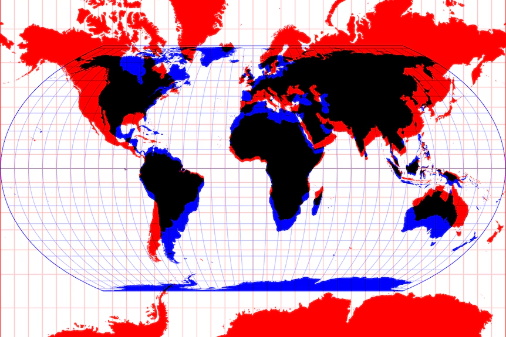
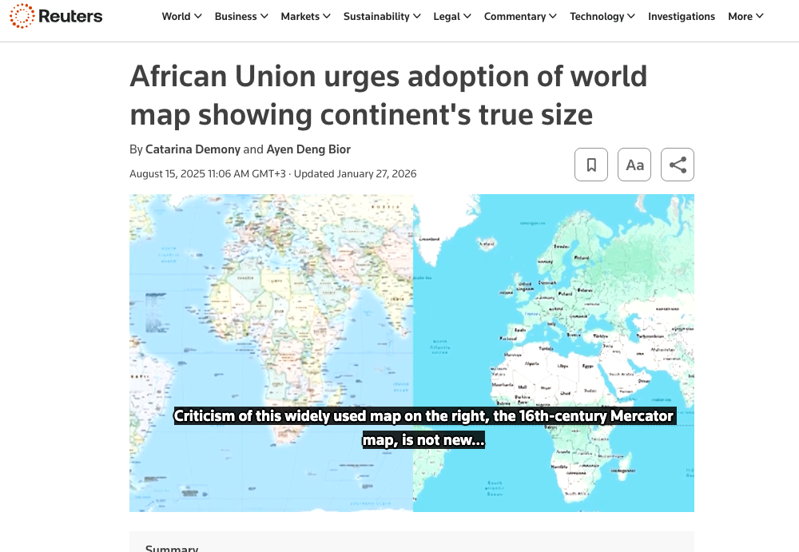
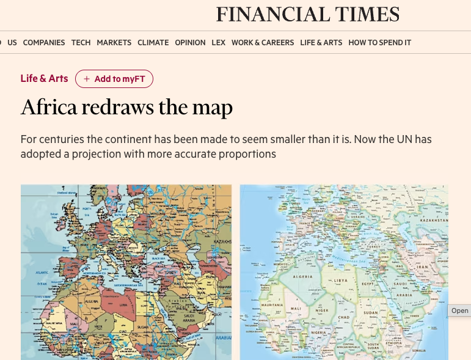
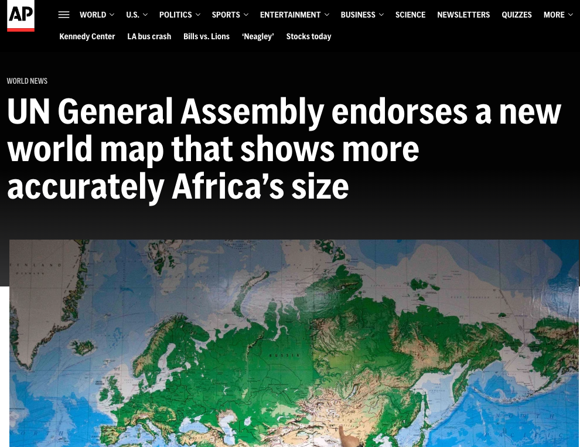
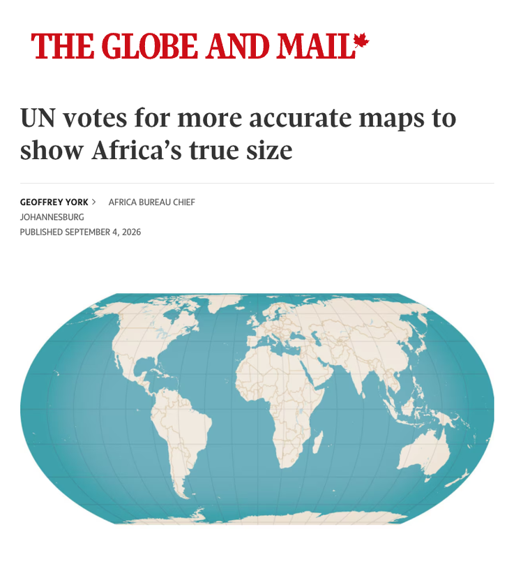
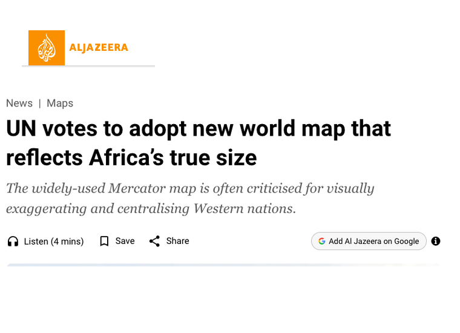
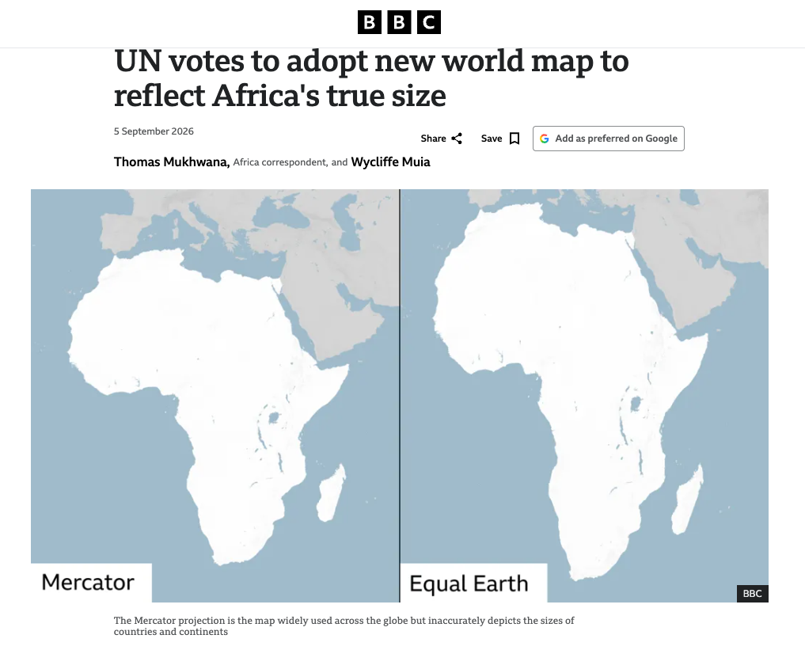
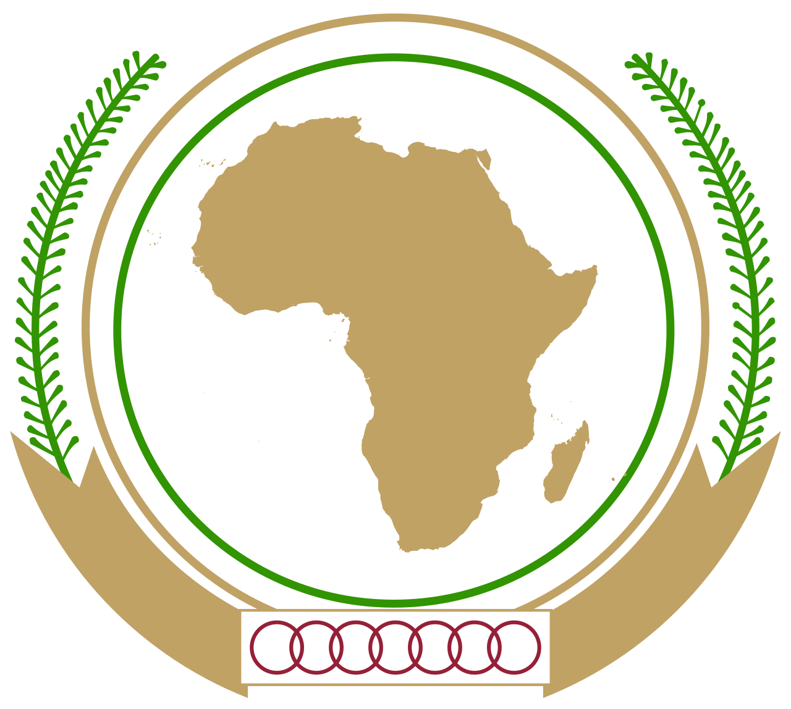
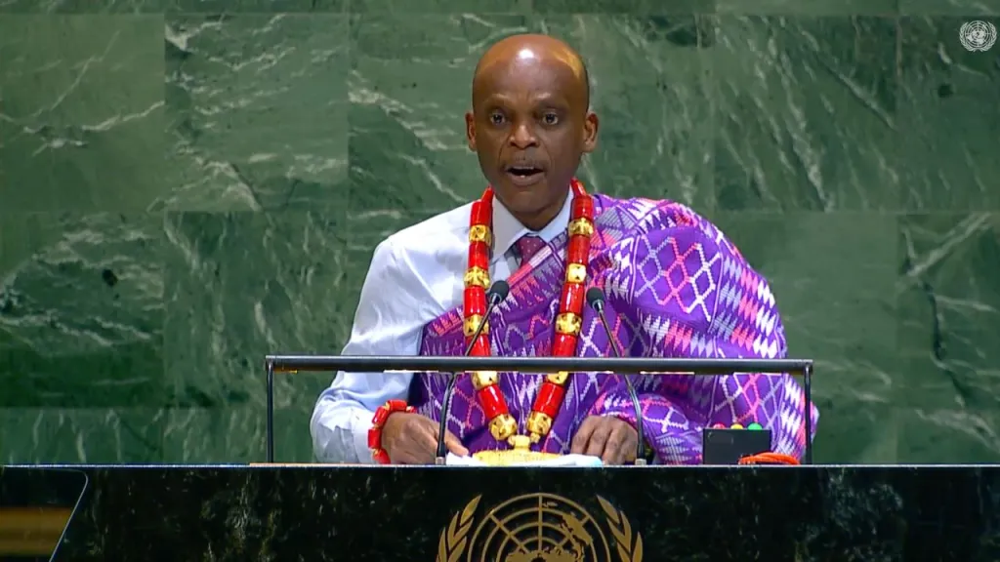

How a 450-year-old cartographic distortion became a global campaign that ended with a resounding UN vote backing a change to global maps.

The Equal Earth projection (blue) shows the world at true scale; the Mercator projection (red) inflates landmasses the closer they sit to the poles. Image: Mike Bostock/Observable.
Maps are part of daily life. We use them to get from A to B, explore new cities, or understand the world. Yet most of the maps we use are built on the Mercator Projection, designed in 1569 to aid ship navigation. Cartographers have long debated its distortions: the projection excessively enlarges landmasses near the poles, so North America, Russia and Europe appear far bigger than Africa, South America and South Asia.
“Africa doesn’t need to be made bigger. It needs to be seen accurately.”
On the map hanging in most classrooms, Africa appears roughly the same size as Greenland. In reality, Africa is fourteen times larger, and has been drawn wrong for almost half a century of default use in atlases, textbooks and world maps.
As a narrative change organisation, the map itself wasn't the real problem. It represented something bigger: a distorted view of Africa, and a lack of African agency to challenge the systems that diminish it. From a campaign perspective, it also offered something rare: a strong story with existing traction, an element of surprise, and the potential to make people think differently, and ultimately to drive adoption of a fairer, more accurate world map.
Before building the mechanics of a campaign, we had to understand how to drive change. That meant understanding maps, projections, cartography, and who controls their use. This led us to engage technical experts such as Esri, and ultimately to the cartographers behind the Equal Earth Projection.
We wanted to be specific about our ask and offer a solution. Our campaign offered a clear alternative in the Equal Earth Projection, not simply a call to stop using Mercator.
ANF couldn't deliver this change alone. We had to find partners who brought capabilities, credibility, networks or access we didn't have. A Dakar-based policy and advocacy organisation became a critical partner, as did the GIS and mapping software provider Esri. Many others brought technical expertise, while others brought political access, media reach and legitimacy.
Next, we needed to find the people who could move the system. What we learned is that institutions don't make things happen. People inside institutions do.
Our team researched who had spoken about the issue, who understood it, who had influence, and who could open doors.
That research identified Carlos Lopes, the Guinea-Bissau economist and former Executive Secretary of the Economic Commission for Africa. Lopes understood the issue: in 2016 he had spoken about the inaccuracies of the Mercator Projection, and he had the knowledge and networks to connect the campaign to advocates who could make things happen.
This process also helped us build a stakeholder target list for future communications and outreach.
We built a small, accountable internal team to develop the campaign infrastructure, including the name, messaging, assets and tools.
This included building the campaign website, correctthemap.org, alongside dedicated social media handles and a content and outreach strategy for each phase of the rollout.
We also created reusable social media content and made it available for other partners to use, so the campaign's messaging and assets could travel beyond channels ANF directly controlled. Toolkits were produced in French as well as English, reflecting the AU's Francophone member states.
Our call to action and proposition were constantly tested and revised. Using town halls and conversations, ANF tested the idea to understand resistance and improve it.
Our execution phase started with direct outreach rather than a mass campaign, as this was felt to be more effective given the stakeholders we were targeting. This outreach involved targeted letters, emails and conversations with the specific institutions and people whose behaviour needed to change.
Public mobilisation, including a Change.org petition, then demonstrated that the issue had wider support.
Given the nature of the African Union, #CorrectTheMap needed an institutional champion who could help move things forward internally, turning an external campaign into an institutional priority. Professor Carlos Lopes helped navigate internal processes at the AU and unlocked a champion in Deputy Chairperson Selma Malika Haddadi.
With Deputy Chairperson Haddadi's support, we pitched an interview to international media to build public and global momentum. A Reuters story in August 2025 took #CorrectTheMap from an interesting campaign to a global story, with media accelerating momentum the campaign had already built.
For the idea to move to AU policy, we needed a country to own and sponsor a motion. That champion came in Professor Robert Dussey, Togo's Minister of Foreign Affairs. In February 2026, the African Union's 55 member states voted unanimously to back the campaign.
With the AU's backing, Professor Dussey and the Republic of Togo had the mandate to bring the issue before the United Nations General Assembly.
With AU Deputy Chairperson Selma Malika Haddadi's support, a pitched interview turned #CorrectTheMap from an internal campaign into a global story, with media accelerating momentum the campaign had already built.
All 55 African Union member states backed the campaign, giving Professor Robert Dussey and the Republic of Togo the mandate to bring the issue before the United Nations General Assembly.
Years of work and persistence, from a wide range of people and organisations, paid off in a single vote at the UN General Assembly.
“It might seem to be just a map, but in reality, it is not.”






South African creator @jojokeniche posted a video arguing the map change reshapes how the world sees Africa. Viewers flooded the comments with pride.

African Union“A fairer and more accurate cartographic representation of Africa.”
“I guess we should be proud of that and convert it to economic power.”
Now our campaign moves from #CorrectTheMap to #ChangeTheMap, ensuring we use the resolution and its momentum to drive adoption of the Equal Earth Projection by schools, institutions, publishers and organisations. Countries are moving too: ahead of the UN vote, France confirmed it would abandon maps using the traditional Mercator projection.
“Changing maps obviously doesn’t change the world. But correcting a distorted representation is already an act of truth.”
We've already begun identifying the new champions and people who will help drive this change. We're also building out a new campaign, including updating the Correct The Map website with a new tracker to show progress on adoption of the Equal Earth Projection.
Visit correctthemap.org →
“A fair world begins with a fair map.”